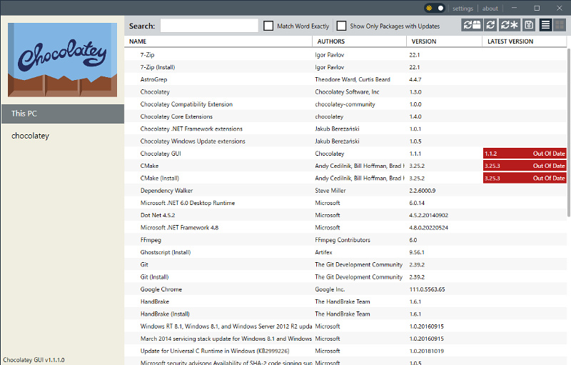
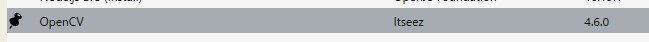

Chocolateyは、Windowsのパッケージ管理ツールです。Linuxのyum/aptや、MacのHomebrewなどと同様なソフトです。
Windowsユーザーにとっては、ソフトにインストールするモジュール／ライブラリ用のパッケージ管理ツール、例えばPythonのpipや、Node.jsのnpmの方が良く知られているかもしれません。Chocolateyの使い方はそれと似ています。
ソフトのアップデート（Chocolateyではアップグレード）や新規PCのセットアップの時に、インストーラを探してダウンロードする作業は、かなりの手間です。そんな時に役立つツールです。
インストール手順
詳細はこちらをご覧ください。
まず、管理者権限でPowerShellを起動します。
ExecutionPolicy が制限されていないことを確認する必要があります。以下を実行してください。
> Get-ExecutionPolicy「Restricted」と表示された場合、以下を実行してください。
> Set-ExecutionPolicy Bypass -Scope Process
もしくは、
> Set-ExecutionPolicy AllSigned最後に、以下を実行してください。
> Set-ExecutionPolicy Bypass -Scope Process -Force; [System.Net.ServicePointManager]::SecurityProtocol = [System.Net.ServicePointManager]::SecurityProtocol -bor 3072; iex ((New-Object System.Net.WebClient).DownloadString('https://community.chocolatey.org/install.ps1'))これでインストールは完了です。ExecutionPolicyは、インストール後に戻しても問題ありません。
GUIのフロントエンドを利用したい場合は、Chocolatey GUIを導入しておきましょう。
> choco install chocolateygui
良く使うコマンド
管理者権限のPowerShellやコマンド プロンプトで「choco」コマンドを利用することで、ソフトのインストールやアンインストールを管理します。
以下によく使うコマンドを簡単に説明します。
以下のコマンドでヘルプを読むことをお勧めします。バージョンによっては使えないオプションもありそうです。
> choco [コマンド名] -h■インストール／アンインストール
> choco install [パッケージ名] -y --version [バージョン名]「-y」（ハイフン1個）で以下を省略できます。常にY。
Do you want to run the script?([Y]es/[A]ll - yes to all/[N]o/[P]rint):「–version」（ハイフン2個）以降が無い場合は最新のものをインストールします。
たまにチェックサム（checksum）でインストールが失敗することがあります。どうしてもインストールしたい時は「–ignore-checksum」のオプションを設定します。
> choco install [パッケージ名] --ignore-checksum以下でアンインストールです。
> choco uninstall [パッケージ名]■様々な一覧表示
> choco listローカルPCにインストールされているパッケージの一覧を表示します。
> choco search [キーワード] -a -eインターネットから「キーワード」の入ったパッケージを検索します。
「-a」（ハイフン1個）が無い場合は最新バージョンのみ表示します。
「-e」（ハイフン1個）が無い場合は似たような名前のものも検索します。無い場合は時間がかかります。名前が分かっていて、どんなバージョンがあるかを探したい時は、「-e」をつけましょう。
まず、本コマンドでパッケージを検索し、その後インストールするのが流れでしょうか。
ちなみに「choco list」で「remote sources」を調べるのは廃止されました（v2.0.0）。
■アップグレード／ピン
> choco upgrade [パッケージ名]パッケージをアップグレードします。しつこいですがコマンド名は「upgrade（アップグレード）」なので注意してください。
「パッケージ名」の代わりに「all」（ハイフン不要）にすると、インストールされている全てのパッケージをアップグレードします。
最低でもChocolatey本体のアップグレードはこまめにしましょう。サーバーと通信できなくなる場合があります。
> choco pin add -n [パッケージ名]「choco pin add」は、「choco upgrade all」の時でもパッケージのアップグレードをしないようにします。（ピン留めする）
Chocolatey GUIでは以下のように表示されます。

> choco pin remove -n [パッケージ名]ピン留めされたパッケージを、アップグレードできるようにします。
> choco pin listピン留めされたパッケージのリストを表示します。